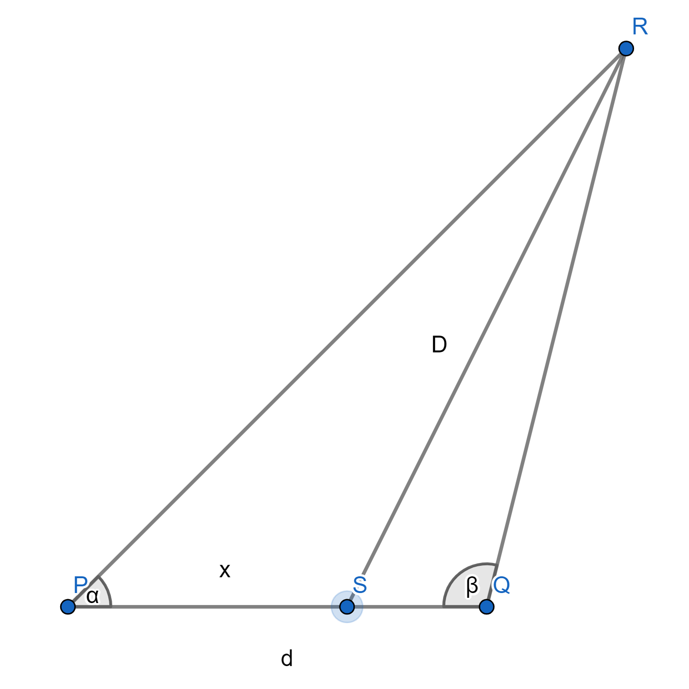

Dependendo das magnitudes dos números, o processo pode ser demorado, deixar seu dispositivo/computador lento, e/ou causar crashes.
Por limitações do JavaScript, operações envolvendo números de modulo muito grande ou muito pequeno podem retornar com erros.
Calculadora: calcular mmc.
Entre com os números naturais positivos, separados por vírgula ",", a ser calculado o mmc:
Exemplo:
Input: "24, 9, 13".
Output: "936".
mmc:
Calculadora: calcular mdc.
Entre com os números naturais positivos, separados por vírgula ",", a ser calculado o mdc:
Exemplo:
Input: "48, 128, 72".
Output: "8".
mdc:
Calculadora: média geométrica.
Entre com os números a terem a média geométrica calculada, separados por vírgula "," (o separador de casas decimais é o ponto "."):
Exemplo:
Input: "1.5, 2, 9".
Output: "3".
Média geométrica:
Calculadora: média harmônica.
Entre com os números a terem a média harmônica calculada, separados por vírgula "," (o separador de casas decimais é o ponto "."):
Exemplo:
Input: "4, 8.5".
Output: "5.44".
Média harmônica:
Calculadora: média aritmética ponderada.
Entre com os pares peso e número a terem a média geométrica calculada, separados por ponto e vírgula ";". Um número é separado do seu peso por vírgula ",", o primeiro elemento do par não nulo. O separador de casas decimais é o ponto ".":
Exemplo: entrando com "5, 3; 10, 1.5", a saída será: "2".
Média aritmética ponderada:
Calculadora: encontrar fração irredutível.
Entre com a fração a reduzir, numerador e denominador números naturais, o denominador não nulo, separados por barra "/".:
Exemplo:
Input: "234 / 52".
Output: "9 / 2".
Fração irredutível:
Calculadora: encontrar moda estatística.
Entre com os números a terem a(s) moda(s) encontrada(s), separados por vírgula "," (o separador de casas decimais é o ponto "."):
Exemplo:
Input: "-1, 0, 3, -1, 4.5".
Output: "-1".
Moda(s):
Calculadora: desvio absoluto médio.
Entre com os números a terem o desvio absoluto médio calculado, separados por vírgula "," (o separador de casas decimais é o ponto "."):
Exemplo:
Input: "3.5, 6".
Output: "1.25".
Desvio absoluto médio:
Calculadora: variância estatística.
Entre com os números a terem a variância estatística calculada, separados por vírgula "," (o separador de casas decimais é o ponto "."):
Exemplo:
Input: "5, 2.5".
Output: "1.5625".
Variância estatística:
Calculadora: desvio padrão.
Entre com os números a terem o desvio padrão calculado, separados por vírgula "," (o separador de casas decimais é o ponto "."):
Exemplo:
Input: "5, 2.5".
Output: "1.25".
Desvio padrão:
Calculadora: sistemas de numeração: conversão de números.
Entre com o número a ser convertido, a base em que está escrito, e a base à qual deseja converter:
Calculadora: rol, ou organizar em ordem crescente ou decrescente.
Entre com os números reais a serem organizados separados por vírgula ",", e, depois de um ponto e vírgula ";", o caractere "c" para ordem crescente, ou "d" para ordem decrescente:
Entre com uma string separada por barra vertical "|": primeiro: a matriz de números reais dispostos em linhas e colunas, o separador de linhas é o ponto e vírgula ";" e o separador dos elementos de uma linha é a vírgula ","; segundo: "e" para matriz escalonada ou "r" para matriz escalonada reduzida por linhas:
Exemplo:
Input: "2, 3, 19; 4, 5, 33 | r".
Output:
"
Dividindo a linha 1 por 2:
1 3/2 19/2
4 5 33
_____
Somando à linha 2 a linha 1 multiplicada por -4:
1 3/2 19/2
0 -1 -5
_____
Dividindo a linha 2 por -1:
1 3/2 19/2
0 1 5
_____
Somando à linha 1 a linha 2 multiplicada por -3/2:
1 0 2
0 1 5
"
Matriz escalonada:
Calculadora: balanceamento de equações químicas.
Entre com uma string contendo a equação, o primeiro membro é separado do segundo pelo caractere ">", as fórmulas são separadas pelo caractere "+", dentro de uma fórmula, os elementos químicos são separados por vírgula ",", a multiplicidade de um elemento é dada pelo número natural passado após dois pontos ":" após o símbolo do elemento químico:
Entre com uma fórmula, os elementos químicos são separados por vírgula ",", a multiplicidade de um elemento é dada pelo número natural passado após dois pontos ":" após o símbolo do elemento químico:
Entre com uma string matriz de números reais; as linhas são separadas por ponto e vírgula ";" e as colunas por vírgula ",":
Exemplo:
Input: "1, 2; 3, 0.5". Output: "-5.5".
Determinante:
Calculadora: multiplicação de matrizes.
Entre com uma string contendo as duas matrizes de números reais separadas pelo caractere "x"; as linhas são separadas por ponto e vírgula ";", as colunas são separadas por vírgula ",":
Exemplo:
Input: "1, 2; 3, 4 x 2, 3; 4, 5".
Output:
"
10 13
22 29
"
Produto:
Calculadora: matriz inversa.
Entre com uma string matriz de números reais onde as linhas são separadas por ponto e vírgula ";" e as colunas são separadas por vírgula ",":
Exemplo:
Input: "1, 2; 3, 4".
Output:
"
-2 1
3/2 -1/2
"
Matriz inversa:
Calculadora: nome de um número.
Entre com uma string contendo um número natural:
Exemplo:
Input: "228". Output: "Duzentos e vinte e oito.".
Nome do número:
Calculadora: conversão para algarismos romanos.
Entre com um número natural positivo a converter em algarismos romanos:
Exemplo:
Input: "24". Output: $XXIV$.
Número em algarismos romanos:
Calculadora: reduzir termos semelhantes.
Entre com uma string contendo um polinômio de coeficientes reais a ter seus termos reduzidos:
Calculadora: divisão de polinômios de uma variável.
Entre com uma string contendo os polinômios de coeficientes reais dividendo e divisor separados por vírgula ",", com o divisor não nulo:
Exemplo:
Input: "2xx - 3x + 5, x - 1".
Output:
Quociente: 2x - 1
Resto: 4
Divisão:
Calculadora: valor numérico de um polinômio.
Separados por vírgula ",", entre primeiramente com o polinômio, depois os valores a serem atribuídos às variáveis: a variável, depois o caractere "=", e depois o valor real:
Exemplo:
Input: "3xyz + xx - 1, x = 4, y = 5".
Output: "60z + 15".
Valor numérico do polinômio:
Calculadora: derivada de um polinômio.
Entre com, separados por vírgula ",": primeiramente o polinômio, depois cada uma das variáveis com relação às quais vai haver a derivação, e, seguindo a variável, após dois pontos ":", quantas vezes irá haver a derivação.:
Exemplo:
Input: "3xxxy + 2xxyy + z, x : 2, y : 1".
Output: "18x + 8y".
Derivada:
Calculadora: aproximação por Taylor.
Entre com os argumentos, separados por vírgula ",", primeiro: string que representa a função; segundo: ponto no qual aplicar a função:
Exemplo:
Input: "sqrt, 3".
Output: aproximadamente "1.73".
Aproximação por Taylor:
Calculadora: expressão de funções.
Entre com a expressão a ser calculada:
Exemplo:
Input: "(2 + sqrt(4)) * 3".
Output: aproximadamente "12".
Resultado:
Calculadora: transcrição e tradução do DNA.
Entre com o trecho do DNA a transcrever e traduzir:
Calculadora: integral definida, aproximação por soma de Riemann.
Entre com uma string contendo, separados por ponto e vírgula ";": primeiro: a expressão da função da qual se deseja obter o valor da integral, deve ser uma função em "x"; segundo: um número real como valor inferior; terceiro: um número real como valor superior; quarto: o número de elementos da partição que será utilizada no cálculo, quanto maior, mais preciso, porém mais demorado e computacionalmente mais exigente.
Integral definida, aproximação por soma de Riemann:
Calculadora: somatório.
Entre com uma string contendo, separados por ponto e vírgula ";": primeiro: a expressão do somatório, deve ser em função de "n"; segundo: um número natural como índice inferior; terceiro: um número inteiro como índice superior. Quanto maior a diferença entre o índice inferior e o superior, mas lentamente o resultado será obtido, além de exigir mais computação.
Entre com uma string contendo, separados por ponto e vírgula ";": primeiro: a expressão do produtório, deve ser em função de "n"; segundo: um número natural como índice inferior; terceiro: um número inteiro como índice superior. Quanto maior a diferença entre o índice inferior e o superior, mas lentamente o resultado será obtido, além de exigir mais computação.
Exemplo:
Input: "n; 1; 5".
Output: "120".
Input: "cos(n) + 1; 1; 4".
Output: aproximadamente "0.003".
(pode travar o sistema)
Produtório:
Calculadora: derivada de uma função em um ponto.
Entre com uma string contendo, separados por ponto e vírgula: primeiro: a função, deve ser na variável "x"; segundo: um número real, ponto do domínio da função; terceiro: "0", "1" ou "2", caso deseje se encontrar a derivada 0, 1, ou 2, respectivamente.
Exemplos:
Input: "x * x * x; 4; 2".
Output: aproximadamente "24".
Input: "cos(x + ln(x)); pi; 1".
Output: aproximadamente "1.5".
Derivada no ponto (trata-se de uma aproximação):
Calculadora: encontrar fração geratriz.
Entre com o número real a ser encontrada a fração geratriz.
Exemplo:
Input: "1.274".
Output: "637 / 500".
Fração geratriz:
Calculadora: limite de uma função contínua.
Entre com, separados por ponto e vírgula ";", a expressão de uma função contínua, que deve ser na variável "x", o ponto do domínio considerado, e o tipo de cálculo: "definicao" para limite; "esquerda" para limite lateral à esquerda, ou "direita" para limite lateral à direita.
Exemplos:
Input: "sen(x); pi; definicao".
Output: Aproximadamente "0".
Input: "1 / x; 0; direita".
Output: "+ infinito".
Limite:
Calculadora: soma de números complexos.
Entre com uma string contendo números complexos separados por ponto e vírgula ";". Número complexo na forma "a, b", com "a" e "b" números reais.
Exemplo:
Input: "2, 5.5; -4, 7; 0, 1". Output: "-2, 13.5".
Soma:
Calculadora: produto de números complexos.
Entre com uma string contendo números complexos separados por ponto e vírgula ";". Número complexo na forma ", b", com "a" e "b" números reais.
Exemplo:
Input: "2, 5.5; -4, 7; 0, 1". Output: "8, -46.5".
Produto:
Calculadora: módulo e argumento principal de um número complexo.
Entre com uma string contendo um número complexo não nulo. Número complexo na forma "a, b", com "a" e "b" números reais.
Exemplo:
Input: "0, 2".
Output:
"
Módulo: aproximadamente "2".
Argumento principal: aproximadamente "pi/2".
"
Módulo e argumento principal:
Calculadora: raio de curvatura de uma função.
Entre com uma string separada por ponto e vírgula ";", tendo como primeira parte uma função em "x", e a segunda parte um número real para "x" de modo que a função seja duas vezes diferenciável em "x":
Exemplo:
Input: "x*x; 1". Output: aproximadamente "5.6".
Raio de curvatura (aproximado):
Calculadora: Velocidade de Antonio Vandré.
Entre com uma string separada por ponto e vírgula ";", tendo como primeira parte uma função em "x", a segunda parte um número real para a velocidade de deslocamento sob o gráfico da função, a terceira a abscissa do ponto de referência, a quarta a ordenada do ponto de referência, e a quinta o valor para "x":
Exemplo:
Input: "x; 2; 2; 0; 1". Output: aproximadamente "0".
Velocidade de Antonio Vandré (aproximada):
Calculadora: Velocidade Angular de Antonio Vandré.
Entre com uma string separada por ponto e vírgula ";", tendo como primeira parte uma função em "x", a segunda parte a abscissa do primeiro ponto do vetor de referência, a terceira parte a ordenada do primeiro ponto do vetor de referência, a quarta parte a abscissa do segundo ponto do vetor de referência, a quinta parte a ordenada do segundo ponto do vetor de referência, a sexta parte um número real para a velocidade de deslocamento sob o gráfico da função, a sétima parte o valor para "x":
Velocidade Angular de Antonio Vandré (aproximada):
Calculadora: Média de Antonio Vandré.
Entre com uma string contendo, separados por ponto e vírgula: primeiro: a expressão da função da qual se deseja obter o valor da média, deve ser uma função em "x"; segundo: um número real como valor inferior; terceiro: um número real como valor superior; quarto: a resolução que será utilizada no cálculo.
Exemplos:
Input: "x; 0; 5; 20".
Output: aproximadamente "2.5".
(pode travar o sistema)
Média de Antonio Vandré (aproximada):
Calculadora: posição em ordem crescente.
Entre com, separados por vírgula ",": primeiro: uma string alfanumérica contendo os elementos que serão utilizados como universo; segundo: uma string alfanumérica da qual se saberá a posição que ocupa; terceiro: "r" para permitir repetição de termos, ou "nr" para contabilizar palavras alfanuméricas em que não há repetição de termos; quarto: "a" para processar apenas letras, ou "t" para processar letras e números.
Entre com uma string dividida em duas partes por barra vertical "|": primeiro: uma string com funções em "x" separadas por ponto e vírgula ";"; segundo: os pontos, separados por ponto e vírgula ";", com abscissa e ordenada separadas por dois pontos ":".
Entre com uma string separada em três partes, separadas por ponto e vírgula ";": primeira: separadas por vírgula, as amplitudes dos coeficientes, reais não negativos, que variam step a step, do inverso aditivo até valores iguais ou maiores que os dados coeficientes, "a", "b", "c", "d" das funções a serem pesquisadas, funções do tipo "a[cos(bx + c)] + d", com opcionalmente acréscimos de mais múltiplos de 3 coeficientes para a soma de mais funções do tipo "a[cos(bx + c)]"; segunda: os pontos, são separados por vírgula "," e a abscissa e a ordenada são separadas por dois pontos ":"; terceira: o valor do step, um real positivo.
Entre com uma string separada em três partes por barra vertical "|", a primeira com uma função em "x", a segunda com o intervalo de pesquisa, o inferior e o superior separados por ponto e vírgula ";", a terceira a precisão, um inteiro positivo, de busca.
Exemplo:
Input: "x - 1 | 0; 5 | 5".
Output: dentre outros possíveis valores aproximados, "1".
(pode travar o sistema)
Possíveis raízes:
Calculadora: distância de um ponto a uma função.
Entre com uma string com os argumentos separados por barra vertical "|", primeiro a função em "x", segundo o ponto onde a abscissa é separada da ordenada por ponto e vírgula ";", terceiro o intervalo de pesquisa com limites separados por ponto e vírgula ";", e quarto um inteiro positivo como a resolução da varredura:
Calculadora: distância de uma função a uma outra função.
Entre com uma string com os argumentos separados por barra vertical "|", primeiro a função em "x", segundo outra função em "x", terceiro o intervalo de pesquisa com limites separados por ponto e vírgula ";", e quarto um inteiro positivo como a resolução da varredura:
Entre com uma string separada por ponto e vírgula ";" com os argumentos, em $a^2 = b^2 + c^2$, primeiro: o intervalo de variação de $a$, segundo: o intervalo de variação de $b$, terceiro: o intervalo de variação de $c$; todos os elementos dos argumentos inteiros positivos e os intervalos separados por vírgula ",".
Exemplo:
Input: "1, 10; 1, 10; 1, 3". Output: "(5, 4, 3)".
(pode travar o sistema)
Triângulos pitagórigos nos intevalos:
Calculadora: área de um triângulo dados os lados.
Entre com uma string separada por vírgula "," com os lados.
Exemplo:
Input: "5, 4, 3". Output: aproximadamente "6".
Área do triângulo:
Calculadora: termos de uma PA.
Entre com uma string separada por ponto e vírgula ";" com, primeiro: um termo e sua posição, segundo: outro termo com sua posição, terceiro: o intervalo de termos a exibir. Termo e posição separados por vírgula ",", intervalo de termos a exibir separado por vírgula ",".
Exemplo:
Input: "5, 1; 10, 2; 1, 3". Output: "5, 10, 15".
PA:
Calculadora: termos de uma PG.
Entre com uma string separada por ponto e vírgula ";" com, primeiro: um termo e sua posição, segundo: outro termo com sua posição, terceiro: o intervalo de termos a exibir. Termo e posição separados por vírgula ",", termos não nulos, intervalo de termos a exibir separado por vírgula ",".
Entre com uma string separada em três partes por barra vertical "|", a primeira com uma função em "x", a segunda com o intervalo de pesquisa, o inferior e o superior separados por ponto e vírgula ";", a terceira a precisão, um inteiro positivo, de busca.
Exemplo:
Input: "x - 1 | 0; 4 | 500".
Output: aproximadamente "-,1,+".
(pode travar o sistema)
Estudo do sinal da função:
Calculadora: próximo termo de uma sequência.
Entre com uma string separada por barra vertical "|" contendo, primeiro, um conjunto de números reais separados por ponto e vírgula ";", e, segundo, o inteiro positivo inteligência.
Exemplo:
Input: "2; 4; 6 | 1". Output: aproximadamente "8".
(pode travar o sistema)
Próximo termo cogitado:
Calculadora: código Morse.
Entre com o código a ser traduzido e, após uma barra inversa "\", "m" para traduzir para código Morse, ou "t" para traduzir do código Morse.
Entre com uma string contendo, separados por ponto e vírgula ";": primeiro: as expressões das funções, separadas por dois pontos ":", das quais se deseja obter os gráficos, devem ser funções em $x$; segundo: um número real como valor inferior; terceiro: um número real como valor superior; quarto: a abscissa do centro de expansão radial; quinto: a ordenada do centro de expansão radial; sexto: o raio de expansão radial; sétimo: a rotação do eixo $Ox$; oitavo: a rotação do eixo $Oy$; nono: a resolução, quanto maior, mais preciso, porém mais demorado e computacionalmente mais exigente.
Log:
Calculadora: gráfico tridimensional de uma função de duas variáveis.
Entre com uma string contendo, separados por ponto e vírgula ";": primeiro: as expressões das funções, separadas por dois pontos ":", das quais se deseja obter os gráficos, devem ser funções em "$x$" e "$y$"; segundo: um número real como valor inferior para "$x$"; terceiro: um número real como valor superior para "$x$"; quarto: um número real como valor inferior para "$y$"; quinto: um número real como valor superior para "$y$"; sexto: a resolução, quanto maior, mais preciso, porém mais demorado e computacionalmente mais exigente.
Log:
Calculadora: curva por coordenadas polares.
Entre com uma string contendo, separados por ponto e vírgula ";": primeiro: as expressões das funções, separadas por dois pontos ":", das quais se deseja obter as curvas, devem ser funções em "teta"; segundo: um número real como valor inferior; terceiro: um número real como valor superior; quarto: a resolução, quanto maior, mais preciso, porém mais demorado e computacionalmente mais exigente.
Log:
Calculadora: curva por coordenadas paramétricas.
Entre com uma string contendo, separados por ponto e vírgula ";": primeiro: as expressões das funções para $x$, separadas por dois pontos ":", das quais se deseja obter as curvas, devem ser funções em $t$; segundo: as expressões das funções para $y$, separadas por dois pontos ":", das quais se deseja obter as curvas, devem ser funções em $t$; terceiro: um número real como valor inferior; quarto: um número real como valor superior; quinto: a abscissa do centro de expansão radial; sexto: a ordenada do centro de expansão radial; sétimo: o raio de expansão radial; oitavo: a rotação do eixo $Ox$; nono: a rotação do eixo $Oy$; décimo: a resolução, quanto maior, mais preciso, porém mais demorado e computacionalmente mais exigente.
Carregar arquivo .mrccpar:
Log:
Calculadora: curva tridimensional por coordenadas paramétricas.
Entre com uma string contendo, separados por ponto e vírgula ";": primeiro: as expressões das funções para $x$, separadas por dois pontos ":", das quais se deseja obter as curvas, devem ser funções em $t$; segundo: as expressões das funções para $y$, separadas por dois pontos ":", das quais se deseja obter as curvas, devem ser funções em $t$; terceiro: as expressões das funções para $z$, separadas por dois pontos ":", das quais se deseja obter as curvas, devem ser funções em $t$; quarto: um número real como valor inferior; quinto: um número real como valor superior; sexto: a resolução, quanto maior, mais preciso, porém mais demorado e computacionalmente mais exigente.
Carregar arquivo .mrctcpar:
Log:
Calculadora: superfície tridimensional por coordenadas paramétricas.
Entre com uma string contendo, separados por ponto e vírgula ";": primeiro: as expressões das funções para $x$, separadas por dois pontos ":", das quais se deseja obter as curvas, devem ser funções em $u$ e $v$; segundo: as expressões das funções para $y$, separadas por dois pontos ":", das quais se deseja obter as curvas, devem ser funções em $u$ e $v$; terceiro: as expressões das funções para $z$, separadas por dois pontos ":", das quais se deseja obter as curvas, devem ser funções em $u$ e $v$; quarto: um número real como valor inferior para $u$; quinto: um número real como valor superior para $u$; sexto: um número real como valor inferior para $v$; sétimo: um número real como valor superior para $v$; oitavo: a resolução, quanto maior, mais preciso, porém mais demorado e computacionalmente mais exigente.
Carregar arquivo .mrstcpar:
Log:
Calculadora: superfície tridimensional por coordenadas polares.
Entre com uma string contendo, separados por ponto e vírgula ";": primeiro: as expressões das funções para "rho", separadas por dois pontos ":", das quais se deseja obter as superfícies, devem ser funções em "teta" e "phi"; segundo: um número real como valor inferior para "teta"; terceiro: um número real como valor superior para "teta"; quarto: um número real como valor inferior para "phi"; quinto: um número real como valor superior para "phi"; sexto: a resolução, quanto maior, mais preciso, porém mais demorado e computacionalmente mais exigente.
Log:
Calculadora: torneio de pontos corridos: probabilidade de, segundo Antonio Vandré, classificar-se entre os n primeiros ou entre os n últimos.
Entre com uma string contendo, separada por ponto e vírgula ";", primeiro; os times com os respectivos pontos separados por vírgula ",", os times e os pontos já conquistados separados por dois pontos ":"; segundo, os confrontos a seguir separados por vírgula ",", um confrontante separado de outro confrontante por dois pontos ":"; terceiro: a resposta que se deseja: separados por vírgula ",", o time, n, e "p" para mostrar a probabilidade de estar entre os n primeiros, ou "u", para mostrar a probabilidade de estar entre os n últimos; quarto: o número de pontos ganhos em caso de derrota; quinto: o número de pontos ganhos em caso de empate; sexto: o número de pontos ganhos em caso de vitória.
Exemplo:
Input: "Palmeiras: 8, Santa Cruz: 9, Vasco: 13; Vasco : Santa Cruz, Santa Cruz : Vasco; Santa Cruz, 1, p; 0; 1; 3".
Output: Aproximadamente "13.33 %".
Probabilidade:
Calculadora: probabilidades dos itens nos resultados de uma loteria.
Envie um arquivo com os resultados da loteria. O conteúdo deve consistir dos resultados em cada linha, e os itens de cada resultado separados por vírgula ",".
Upload dos resultados (se muitos, pode travar o sistema):
Probabilidades:
Calculadora: parcelas constantes com juros embutidos.
Entre com uma string separada com pontos e vírgula ";" contendo, primeiro, o valor da mercadoria / serviço; segundo: o valor de entrada; terceiro, o número de parcelas; e quarto, a taxa de juros.
Exemplo:
Input: "2000; 100; 8; 0.1". Output: aproximadamente 356.14.
Valor de cada parcela:
Calculadora: gráfico de uma curva ou região por uma relação.
Entre com uma string contendo, separados por ponto e vírgula ";": primeiro: as expressões das relações, separadas por dois pontos ":", das quais se deseja obter os gráficos, devem ser relações em $x$ e $y$; segundo: um número real como valor inferior para $x$; terceiro: um número real como valor superior para $x$; quarto: um número real como valor inferior para $y$; quinto: um número real como valor superior para $y$; sexto: a abscissa do centro de expansão radial; sétimo: a ordenada do centro de expansão radial; oitavo: o raio de expansão radial; nono: a rotação do eixo $Ox$; décimo: a rotação do eixo $Oy$; décimo primeiro: a resolução, quanto maior, mais preciso, porém mais demorado e computacionalmente mais exigente.
Log:
Calculadora: IMC (índice de massa corporal).
Entre com uma string separada por ponto e vírgulas ";" contendo, primeiro, seu peso em quilogramas; segundo, sua altura em centímetros.
Exemplo:
Input: "90; 175".
Output:
"
IMC: aproximadamente 29.4.
Sobrepeso.
".
IMC:
Calculadora: gráfico de uma superfície ou região tridimensional por uma relação.
Entre com uma string contendo, separados por ponto e vírgula ";": primeiro: as expressões das relações, separadas por dois pontos ":", das quais se deseja obter os gráficos, devem ser relações em $x$, $y$ e $z$; segundo: um número real como valor inferior para $x$; terceiro: um número real como valor superior para $x$; quarto: um número real como valor inferior para $y$; quinto: um número real como valor superior para $y$; sexto: um número real como valor inferior para $z$; sétimo: um número real como valor superior para $z$; oitavo: a resolução, quanto maior, mais preciso, porém mais demorado e computacionalmente mais exigente.
Log:
Calculadora: máximo ou mínimo de uma função.
Entre com uma string separada em quatro partes por barra vertical "|", a primeira com uma função em "x", a segunda com o intervalo de pesquisa, o inferior e o superior separados por ponto e vírgula ";", a terceira "m" se deseja o mínimo ou "M" se deseja o máximo, a quarta a precisão, um inteiro positivo, de busca.
Exemplo:
Input: "x*x | -2; 2 | m | 20".
Output: dentre outros possíveis valores aproximados, "0".
(pode travar o sistema)
Máximo ou mínimo (dependendo do que foi pedido):
Calculadora: equação da reta tangente.
Entre com uma string dividida em duas partes por ponto e vírgula ";", na primeira parte a expressão da função, deve ser uma função em "x"; na segunda parte entre com um valor do domínio de tal função.
Exemplo:
Input: "sen(x); pi".
Output: aproximadamente "y = -x + 3.141592653589793".
Equação da reta tangente (aproximada):
Calculadora: estatísticas de um polígono regular.
Entre com uma string dividida em duas partes por ponto e vírgula ";", na primeira parte o número de lados do polígono; na segunda parte entre com o valor do lado do polígono.
Exemplo:
Input: "4; 2".
Output: aproximadamente
"
Quadrado.
Perímetro: 8.
Apótema: 1.
Raio da circunferência circunscrita: 1.414213562373095.
Área: 4.
Medida dos ângulos internos: 90 graus.
Medida dos ângulos externos: 90 graus.
Área do círculo inscrito: 3.141592653589793.
Área do círculo circunscrito: 6.2831853071795845.
Razão entre as áreas do polígono e do círculo inscrito: 1.2732395447351628.
Razão entre as áreas do círculo circunscrito e do polígono 1.5707963267948961.
Razão entre as áreas do círculo circunscrito e do círculo inscrito 2.
".
Estatísticas do polígono regular, aproximadas:
Calculadora: comprimento do gráfico de uma função.
Entre com uma string contendo, separados por ponto e vírgula: primeiro: a expressão da função da qual se deseja obter o comprimento, deve ser uma função em "x"; segundo: um número real como valor inferior; terceiro: um número real como valor superior; quarto: a resolução que será utilizada no cálculo.
Exemplo:
Input: "x; 0; 5; 20". Output: aproximadamente "7.071067811865478".
(pode travar o sistema)
Comprimento do gráfico da função no intervalo (aproximado):
Calculadora: Ponto Cego de Antonio Vandré no eixo Ox.
Entre com uma string separada por ponto e vírgula ";", tendo como primeira parte uma função em "x", a segunda a abscissa do ponto de referência, a terceira a ordenada do ponto de referência, e a quarta o valor para "x":
Exemplo:
Input: "2; 0; 1; -1". Output: aproximadamente "1".
Ponto Cego de Antonio Vandré no eixo $Ox$ (aproximado):
Calculadora: Velocidade do Ponto Cego de Antonio Vandré no eixo Ox.
Entre com uma string separada por ponto e vírgula ";", tendo como primeira parte uma função em "x", a segunda parte um número real para a velocidade de deslocamento sob o gráfico da função, a terceira a abscissa do ponto de referência, a quarta a ordenada do ponto de referência, e a quinta o valor para "x":
Exemplo:
Input: "3; -1; 0; 1; -1". Output: aproximadamente "0.5".
Velocidade do Ponto Cego de Antonio Vandré no eixo $Ox$ (aproximada):
Calculadora: completar quadrado.
Entre com uma string contendo um polinômio do segundo grau, em "x", de coeficientes reais, a completar:
Exemplo:
Input: "4xx - 8x + 3". Output: "$(2x - 2)^2 - 1$.
Quadrado completado:
Calculadora: Velocidade Funcional de Antonio Vandré.
Entre com uma string separada por ponto e vírgula ";", tendo como primeira parte uma função em "x", a segunda parte um número real para a velocidade de deslocamento sob o eixo Ox, a terceira a abscissa do ponto no qual se deseja conhecer a velocidade:
Exemplo:
Input: "x; 1; 1". Output: aproximadamente "sqrt(2)".
Velocidade Funcional de Antonio Vandré:
Calculadora: área de um polígono convexo.
Entre com um número finito de vértices consecutivos separados por barra vertical "|", a abscissa separada da ordenada por ponto e vírgula ";":
Exemplo:
Input: "0; 0 | 0; 1 | 1; 1 | 1; 0". Output: "1".
Área:
Calculadora: ponto simétrico a uma reta.
Entre com os argumentos, separados por barra vertical "|": primeiro: o ponto com abscissa separada da ordenada por ponto e vírgula ";"; segundo: os coeficientes $a$, $b$ e $c$ da reta $ax + by + c = 0$, separados por ponto e vírgula ";":
Exemplo:
Input: "0; 3 | -1; 1; 0". Output: "3, 0".
Ponto simétrico à reta:
Calculadora: dia da semana.
Entre com, separados por barra "/", a data do dia, a data do mês, e o ano:
Exemplo:
Input: "8 / 2 / 2022".
Output: "Terça-feira.".
Dia da semana:
Calculadora: distância por triangulação.
Entre com, separados por ponto e vírgula ";", um valor para $\alpha$, um valor para $\beta$, um valor para $d$, e um valor para $x$.

Exemplo:
Input: "pi/6; pi/3; 1; sqrt(3)/2".
Output: aproximadamente "0.6751084105090466".
Distância de $S$ a $R$:
Calculadora: conversões entre código binário e ASCII.
Entre com, separados por ponto e vírgula ";", a string a converter, e "b" para código binário, ou "a" para ASCII.
Calculadora: resolução de uma equação polinomial do segundo grau passo a passo.
Em $ax^2 + bx + c = 0$, entre com, separados por ponto e vírgula ";", um valor para o coeficiente $a$, um valor para o coeficiente $b$, e um valor para o coeficiente $c$.
Resolução passo a passo:
Software: simulação de uma partícula em um recipiente.
Entre com, separadas por ponto e vírgula ";", a posição $x$, a posição $y$, a velocidade $v_x$, a velocidade $v_y$, o raio da partícula $r$, e a gravidade $g$.
Exemplo: entre com "5; 30; 3; 2; 1; 9".
Simulação:
Calculadora: equação cartesiana de uma circunferência dados 3 pontos.
Entre com, separados por ponto e vírgula ";", os 3 pontos não colineares; as abscissas separadas das ordenadas por vírgula ",".
Equação cartesiana da circunferência:
A equação aparecerá aqui...
Calculadora: função quadrática dados 3 pontos.
Entre com, separados por ponto e vírgula ";", os 3 pontos não colineares de abscissas diferentes; as abscissas separadas das ordenadas por vírgula ",".
Função quadrática:
A função aparecerá aqui...
Calculadora: coordenadas do ortocentro de um triângulo.
Entre com, separados por ponto e vírgula ";", os vértices não colineares do triângulo; as abscissas são separadas das ordenadas por vírgula ",".
Ortocentro:
Calculadora: reta de Euler.
Entre com, separados por ponto e vírgula ";", os 3 vértices não colineares do triângulo a encontrar a equação da reta de Euler; as abscissas separadas das ordenadas por vírgula ",".
Reta de Euler:
A equação da reta apareerá aqui...
Calculadora: coordenadas do baricentro de um triângulo.
Entre com, separados por ponto e vírgula ";", os vértices não colineares do triângulo; as abscissas são separadas das ordenadas por vírgula ",".
Exemplo: entre com "0, 0; 0, 3; 4, 0".
Baricentro:
Calculadora: coordenadas do incentro de um triângulo.
Entre com, separados por ponto e vírgula ";", os vértices não colineares do triângulo; as abscissas são separadas das ordenadas por vírgula ",".
Exemplo: entre com "0, 0; 0, 3; 4, 0".
Incentro:
Calculadora: divisão de polinômios passo a passo.
Entre com uma string contendo os polinômios de coeficientes reais dividendo e divisor separados por vírgula ",", com o divisor não nulo.
Exemplo:
Entre com "2xx - 3x + 5, x - 1".
Divisão de polinômios passo a passo:
A divisão irá aparecer aqui...
Calculadora: equação cartesiana da circunferência circunscrita a um triângulo.
Entre com, separados por ponto e vírgula ";", os 3 vértices não colineares do triângulo; as abscissas separadas das ordenadas por vírgula ",".
Exemplo: entre com "0, 0; 0, 3; 4, 0".
Equação cartesiana da circunferência circunscrita:
A equação aparecerá aqui...
Calculadora: coordenadas do circuncentro de um triângulo.
Entre com, separados por ponto e vírgula ";", os vértices não colineares do triângulo; as abscissas são separadas das ordenadas por vírgula ",".
Exemplo: entre com "0, 0; 0, 3; 4, 0".
Circuncentro:
Calculadora: equação cartesiana da circunferência inscrita em um triângulo.
Entre com, separados por ponto e vírgula ";", os 3 vértices não colineares do triângulo; as abscissas separadas das ordenadas por vírgula ",".
Exemplo: entre com "0, 0; 0, 3; 4, 0".
Equação cartesiana da circunferência inscrita:
A equação aparecerá aqui...
Calculadora: divisão de inteiros não negativos passo a passo.
Entre com uma string contendo os inteiros não negativos dividendo e divisor separados por vírgula ",", com o divisor não nulo.
Exemplo:
Entre com "55, 3".
Divisão passo a passo:
Calculadora: coordenadas da intersecção das diagonais de um quadrilátero convexo.
Entre ordenadamente com, separados por ponto e vírgula ";", os vértices de um quadrilátero convexo; as abscissas são separadas das ordenadas por vírgula ",".
Calculadora: mínimo múltiplo comum (mmc) passo a passo.
Entre com, separados por vírgula ",", inteiros positivos ao menos um maior que $1$.
Exemplo: entre com "3, 2, 12".
Mínimo múltiplo comum (mmc) passo a passo:
Calculadora: máximo divisor comum (mdc) passo a passo.
Entre com, separados por vírgula ",", inteiros positivos ao menos um maior que $1$.
Exemplo: entre com "144, 90, 198".
Máximo divisor comum (mdc) passo a passo:
Calculadora: linha poligonal.
Entre com uma string contendo, separadas por dois pontos ":", as linhas poligonais, cada linha poligonal consistindo de pontos separados por ponto e vírgula ";", abscissas separadas das ordenadas por vírgula ",".
Carregar arquivo de um pré-moldado 2D (extensão padrão: ".mrpm2"):
Entre com uma string contendo, separadas por dois pontos ":", as linhas poligonais, cada linha poligonal consistindo de pontos separados por ponto e vírgula ";", abscissas, ordenadas e cotas separadas por vírgula ",".
Carregar arquivo de um pré-moldado 3D (extensão padrão: ".mrpm3"):
Calculadora: superfície de revolução gerada por gráfico de uma função.
Entre com uma string contendo, separados por ponto e vírgula ";": primeiro: as expressões das funções, separadas por dois pontos ":", das quais se deseja obter os gráficos, devem ser funções em $x$; segundo: um número real como valor inferior; terceiro: um número real como valor superior; quarto: "x" para rotacionar em torno do eixo $Ox$, ou "y" para rotacionar em todo do eixo $Oy$; quinto: a resolução, quanto maior, mais preciso, porém mais demorado e computacionalmente mais exigente.
Log:
Calculadora: superfície de revolução gerada por uma curva por coordenadas paramétricas.
Entre com uma string contendo, separados por ponto e vírgula ";": primeiro: as expressões das funções para $x$, separadas por dois pontos ":", das quais se deseja obter as curvas, devem ser funções em $t$; segundo: as expressões das funções para $y$, separadas por dois pontos ":", das quais se deseja obter as curvas, devem ser funções em $t$; terceiro: um número real como valor inferior; quarto: um número real como valor superior; quinto: "x" para rotacionar com relação ao eixo $Ox$, ou "y" para rotacionar quanto ao eixo $Oy$; sexto: a resolução, quanto maior, mais preciso, porém mais demorado e computacionalmente mais exigente.
Log:
Calculadora: superfície ou região de revolução por gráfico de uma curva ou região por uma relação.
Entre com uma string contendo, separados por ponto e vírgula ";": primeiro: as expressões das relações, separadas por dois pontos ":", das quais se deseja obter os gráficos, devem ser relações em $x$ e $y$; segundo: um número real como valor inferior para $x$; terceiro: um número real como valor superior para $x$; quarto: um número real como valor inferior para $y$; quinto: um número real como valor superior para $y$; sexto: "x" para rotação com relação ao eixo $Ox$, ou "y" para rotação com relação ao eixo $Oy$; sétimo: a resolução, quanto maior, mais preciso, porém mais demorado e computacionalmente mais exigente.
Log:
Calculadora: superfície de revolução gerada por gráfico em coordenadas polares.
Entre com uma string contendo, separados por ponto e vírgula ";": primeiro: as expressões das funções, separadas por dois pontos ":", das quais se deseja obter os gráficos, devem ser funções em "teta"; segundo: um número real como valor inferior; terceiro: um número real como valor superior; quarto: "x" para rotacionar em torno do eixo $Ox$, ou "y" para rotacionar em todo do eixo $Oy$; quinto: a resolução, quanto maior, mais preciso, porém mais demorado e computacionalmente mais exigente.
Log:
Calculadora: gráfico de pizza.
Entre com, separados por ponto e vírgula ";", os itens do gráfico; cada item é composto de, primeiro: uma string label, e, segundo, um número real para sua quantidade; label e quantidade separadas por vírgula ",".
Exemplo:
Entre com: "Brasil, 20; Canadá, 40; EUA, 5".
Log:
Calculadora: gráfico de barras.
Entre com, separados por barra vertical "|" três argumentos, o primeiro: separados por ponto e vírgula ";", os itens do gráfico; cada item é composto de, primeiro: uma string label, e, segundo, um número real para sua quantidade; label e quantidade separadas por vírgula ","; o segundo "v" para gráfico de barras verticais, ou "h" para gráfico de barras horizontais; o terceiro: uma string separadas em três partes por ponto e vírgula ";", cada parte um número inteiro entre "0" e "255", inclusive, o primeiro para a tonalidade vermelho, o segundo para a tonalidade verde, e o terceiro para a tonalidade azul.
Exemplo:
Entre com: "Brasil, 20; Canadá, 40; EUA, 5 | v | 128; 255; 128".
Log:
Calculadora: gráfico de radar.
Entre com, separados por barra vertical "|" dois argumentos, o primeiro: separados por ponto e vírgula ";", os itens do gráfico; cada item é composto de, primeiro: uma string label, e, segundo, um número real para sua quantidade; label e quantidade separadas por vírgula ","; o segundo: uma string separadas em três partes por ponto e vírgula ";", cada parte um número inteiro entre "0" e "255", inclusive, o primeiro para a tonalidade vermelho, o segundo para a tonalidade verde, e o terceiro para a tonalidade azul.
Entre com, separados por barra vertical "|" três argumentos, o primeiro: separados por ponto e vírgula ";", os itens do gráfico; cada item é composto de, primeiro: uma string label, e, segundo, um número real para sua quantidade; label e quantidade separadas por vírgula ","; o segundo uma string separadas em três partes por ponto e vírgula ";", cada parte um número inteiro entre "0" e "255", inclusive, o primeiro para a tonalidade vermelho, o segundo para a tonalidade verde, e o terceiro para a tonalidade azul.
Entre com, separados por ponto e vírgula ";", primeiro, a quantia; segundo, o código ISO de qual moeda converter; e, terceiro, o código ISO da moeda da qual se deseja conhecer a conversão.
Exemplo: entre com "1; USD; BRL".
Conversão:
Conversão rápida entre moedas populares:
Calculadora: notação científica.
Entre com um número real:
Notação científica:
Calculadora: ponto simétrico.
Entre com, separados por barra vertical "|", o ponto do qual se deseja conhecer o simétrico, e o ponto de referência. Abscissas separadas das ordenadas por ponto e vírgula ";".
Exemplos:
Input: "2; 3 | 1; 1"". Output: "0, -1".
Input: "5; 4; -2 | 0; 0; 0". Output: "-5, -4, 2".
Ponto simétrico:
Calculadora: fração geratriz de uma dízima periódica.
Entre com uma string do tipo "m.npo" onde "m", "n" e "o" são números inteiros, "p" é um marcador do início da periodicidade, "n" e "o" não negativos, "n" pode ser omitido.
Exemplos:
Input: "12.4p7". Output: "1123 / 90".
Input: "-5.p501". Output: "-1832 / 333".
Fração geratriz da dízima periódica:
Calculadora: comprimento do gráfico de uma função em coordenadas polares.
Entre com uma string contendo, separados por ponto e vírgula: primeiro: a expressão da função da qual se deseja obter o comprimento, deve ser uma função em "teta"; segundo: um número real como valor inferior; terceiro: um número real como valor superior; quarto: a resolução que será utilizada no cálculo.
Exemplo:
Input: "1; 0; 2*pi; 100". Output: aproximadamente "2pi".
(pode travar o sistema)
Comprimento do gráfico da função no intervalo (aproximado):
Calculadora: comprimento de uma curva por coordenadas paramétricas.
Entre com uma string contendo, separados por ponto e vírgula: primeiro: a expressão da função para $x$ da qual se deseja obter o valor do comprimento, deve ser uma função em $t$; segundo: a expressão da função para $y$ da qual se deseja obter o valor do comprimento, deve ser uma função em $t$; terceiro: um número real como valor inferior para $t$; quarto: um número real como valor superior para $t$; quinto: a resolução que será utilizada no cálculo.
Exemplo:
Input: "cos(t); sen(t); 0; 2*pi; 100". Output: aproximadamente "2pi".
(pode travar o sistema)
Comprimento da curva no intervalo (aproximado):
Calculadora: comprimento de uma curva tridimensional por coordenadas paramétricas.
Entre com uma string contendo, separados por ponto e vírgula: primeiro: a expressão da função para $x$ da qual se deseja obter o valor do comprimento, deve ser uma função em $t$; segundo: a expressão da função para $y$ da qual se deseja obter o valor do comprimento, deve ser uma função em $t$; terceiro: a expressão da função para $z$ da qual se deseja obter o valor do comprimento, deve ser uma função em $t$; quarto: um número real como valor inferior para $t$; quinto: um número real como valor superior para $t$; sexto: a resolução que será utilizada no cálculo.
Exemplo: entre com: "cos(t); sen(t); t; 0; 2*pi; 100".
(pode travar o sistema)
Comprimento da curva tridimensional no intervalo (aproximado):
Calculadora: combustível mais vantajoso para abastecer um veículo.
Separados por ponto e vírgula ";", entre com os combustíveis. Cada combustível consiste em três partes separadas por vírgula ",": primeiro: o nome; segundo: o preço por volume; terceiro: o quanto de distância seu veículo percorre com tal volume.
Exemplo:
Input: "Gasolina, 8.53, 20; Etanol, 5.67, 15".
Output: "Etanol".
Combustível mais vantajoso:
Calculadora: valor em cédulas e moedas.
Entre com uma string separada por ponto e vírgula ";", sendo a primeira parte o valor monetário, e a segunda uma parte separada por vírgulas "," com as cédulas e moedas existentes.
Exemplo: entre com "150; 50, 25"
Valor em cédulas e moedas:
Calculadora: Curva Dirigida de Antonio Vandré.
Entre com uma string contendo, separados por ponto e vírgula ";": primeiro: a expressão para $x_0$; segundo: a expressão para $y_0$; terceiro: a expressão para $v_x$; quarto: a expressão para $v_y$; quinto: a função $u(t)$, deve ser uma função em "t"; sexto: um número real não negativo como valor inferior para "t"; sétimo: um número real maior que o valor inferior como valor superior para "t"; oitavo: a resolução, quanto maior, mais precisa a curva, porém o cálculo mais demorado e computacionalmente mais exigente.
Log:
Calculadora: Coordenada de Distância de Antonio Vandré.
Entre com, separados por ponto e vírgula ";", primeiro: o ponto em coordenadas cartesianas, segundo: o ponto de referência "P", terceiro: o ponto de referência "Q", quarto: o ponto de referência "R"; abscissas e ordenadas separadas por dois pontos ":".
Exemplo:
Entre com: "2: 2; 3: 2; 1: pi; -4: euler".
Coordenada de Distância de Antonio Vandré:
Calculadora: Coordenada Canônica de Distância de Antonio Vandré.
Entre com, separadas por ponto e vírgula ";" a abscissa e a ordenada cartesianas.
Exemplo:
Entre com: "2; pi - 1".
Coordenada Canônica de Distância de Antonio Vandré:
Calculadora: conversão de Coordenadas de Distância de Antonio Vandré para coordenadas cartesianas.
Entre com, separados por ponto e vírgula ";", primeiro: o primeiro ponto de referência e sua distância, segundo: o segundo ponto de referência e sua distância, terceiro: o ponto de referência e sua distância, quarto: o ponto de referência; abscissas, ordenadas e distâncias separadas por dois pontos ":".
Exemplo:
Entre com: "2: euler: 1; 3: 2: pi; 1: cos(3): 4".
Coordenadas cartesianas:
Calculadora: conversão de Coordenadas Canônicas de Distância de Antonio Vandré para coordenadas cartesianas.
Entre com, separados por ponto e vírgula ";", os elementos da Coordenada Canônica de Antonio Vandré da qual se deseja conhecer em coordenadas cartesianas.
Exemplo:
Entre com: "2; euler; cos(ln(2))".
Coordenadas cartesianas:
Calculadora: Coordenadas Quadráticas de Antonio Vandré.
Entre com, separadas por ponto e vírgula ";" a abscissa e a ordenada cartesianas.
Exemplo:
Entre com: "2; sen(pi/6)".
Coordenadas Quadráticas de Antonio Vandré:
Calculadora: menor círculo que contém os pontos dados.
Entre com, separados por ponto e vírgula ";", os pontos; as abscissas separadas das ordenadas por vírgula ",".
Inequação cartesiana do menor círculo que contém os pontos dados:
A inequação aparecerá aqui...
Inequação cartesiana da menor bola que contém os pontos dados:
Entre com, separados por ponto e vírgula ";", os pontos; as abscissas, ordenadas e cotas separadas por vírgula ",".
Inequação cartesiana da menor bola que contém os pontos dados:
A inequação aparecerá aqui...
Calculadora: projeção de um ponto em uma reta.
Entre com os argumentos, separados por barra vertical "|": primeiro: o ponto com abscissa separada da ordenada por ponto e vírgula ";"; segundo: os coeficientes $a$, $b$ e $c$ da reta $ax + by + c = 0$, separados por ponto e vírgula ";":
Exemplo:
Input: "1; 3 | -1; 1; 0". Output: "2, 2".
Projeção do ponto na reta:
Calculadora: projeção de um ponto em um plano.
Entre com os argumentos, separados por barra vertical "|": primeiro: o ponto com abscissa, ordenada e cota separadas por ponto e vírgula ";"; segundo: os coeficientes $a$, $b$, $c$ e $d$ do plano $ax + by + cz + d = 0$, separados por ponto e vírgula ";":
Calculadora: ponto simétrico com relação a um plano.
Entre com os argumentos, separados por barra vertical "|": primeiro: o ponto com abscissa, ordenada e cota separadas por ponto e vírgula ";"; segundo: os coeficientes $a$, $b$, $c$ e $d$ do plano $ax + by + cz + d = 0$, separados por ponto e vírgula ";":
Entre com os argumentos separados por duas barras verticais "||": primeiro: uma string separada por barra vertical "|" onde cada elemento é um ponto onde as coordenadas são separadas por ponto e vírgula ";"; segundo "r" para radianos ou "g" para graus.
Calculadora: comprimento da projeção de um segmento em uma reta.
Entre com os argumentos separados por duas barras verticais "||": primeiro: separados por barra vertical "|", os pontos extremos do segmento com abscissas separadas das ordenadas por ponto e vírgula ";"; segundo: coeficientes $a$, $b$ e $c$, da reta $ax + by + c = 0$.
Exemplo:
Input: "1; 2 | 3; 2 || 0; 1; 5". Output: "2".
Comprimento da projeção do segmento na reta:
Calculadora: comprimento da projeção de um segmento em um plano.
Entre com os argumentos separados por duas barras verticais "||": primeiro: separados por barra vertical "|", os pontos extremos do segmento com abscissas, ordenadas e cotas separadas por ponto e vírgula ";"; segundo: coeficientes $a$, $b$, $c$ e $d$, do plano $ax + by + cz + d = 0$.
Entre com uma string separada por barra vertical "|" contendo os vértices do triângulo com abscissas, ordenadas e cotas separadas por ponto e vírgula ";".
Calculadora: área da projeção de um triângulo em um plano.
Área da projeção de um triângulo em um plano. Argumentos: primeiro global: separado por duas barras verticais "||": primeiro: separados por barra vertical "|", os vértices do triângulo com abscissas, ordenadas e cotas separadas por ponto e vírgula ";"; segundo: coeficientes $a$, $b$, $c$ e $d$, do plano $ax + by + cz + d = 0$.
Calculadora: intersecções entre uma reta e uma circunferência.
Entre com uma string contendo separadas por barra vertical "|", a reta na forma $ax + by + c = 0$ com coeficientes $a$, $b$ e $c$ separados por ponto e vírgula ";" e a circunferência consistindo da abscissa de seu centro, a ordenada de seu centro, e o seu raio, separados por ponto e vírgula ";".
Exemplo:
Input:
"tg(2); fatorial(3); 3 | -log(10, 2); 2; 4".
Output:
"
-4.659751425365828, -4.696957102885669
-1.52247163510813, -3.554443535566035
".
Intersecções entre a reta e a circunferência:
Calculadora: intersecções entre duas circunferências.
Entre com uma string contendo separadas por barra vertical "|", as circunferências consistindo da abscissa de seu centro, a ordenada de seu centro, e o seu raio, separados por ponto e vírgula ";".
Exemplo:
Input: "0; 0; 1 | 3; 0; 2".
Output: "1, 0".
Intersecções entre as circunferências:
Calculadora: gráfico simétrico de uma função com relação a um ponto.
Entre com uma string contendo, separados por ponto e vírgula ";": primeiro: as expressões das funções, separadas por dois pontos ":", das quais se deseja obter os gráficos simétricos, devem ser funções em $x$; segundo: a abscissa do ponto de referência; terceiro: a ordenada do ponto de referência; quarto: "0" para não mostrar o gráfico origem ou "1" para mostrar; quinto: um número real como valor inferior; sexto: um número real como valor superior; sétimo: a abscissa do centro de expansão radial; oitavo: a ordenada do centro de expansão radial; nono: o raio de expansão radial; décimo: a rotação do eixo $Ox$; décimo primeiro: a rotação do eixo $Oy$; décimo segundo: a resolução, quanto maior, mais preciso, porém mais demorado e computacionalmente mais exigente.
Log:
Calculadora: gráfico simétrico de uma função com relação a uma reta.
Entre com uma string contendo, separados por ponto e vírgula ";": primeiro: as expressões das funções, separadas por dois pontos ":", das quais se deseja obter os gráficos simétricos, devem ser funções em $x$; segundo: o coeficiente de $x$ na reta de referência; terceiro: o coeficiente de $y$ na reta de referência; quarto: o coeficiente independente na reta de referência; a reta de referência é da forma $ax + by + c = 0$; quinto: "0" para não mostrar a reta e o gráfico origem, ou "1" para mostrar; sexto: um número real como valor inferior; sétimo: um número real como valor superior; oitavo: a abscissa do centro de expansão radial; nono: a ordenada do centro de expansão radial; décimo: o raio de expansão radial; décimo primeiro: a rotação do eixo $Ox$; décimo segundo: a rotação do eixo $Oy$; décimo terceiro: a resolução, quanto maior, mais preciso, porém mais demorado e computacionalmente mais exigente.
Log:
Calculadora: simétrica de uma curva por coordenadas paramétricas com relação a um ponto.
Entre com uma string contendo, separados por ponto e vírgula ";": primeiro: as expressões das funções para $x$, separadas por dois pontos ":", das quais se deseja obter as curvas simétricas, devem ser funções em $t$; segundo: as expressões das funções para $y$, separadas por dois pontos ":", das quais se deseja obter as curvas simétricas, devem ser funções em $t$; terceiro: a abscissa do ponto de referência; quarto: a ordenada do ponto de referência; quinto: "0" para não mostrar o gráfico original, ou "1" para mostrar; sexto: um número real como valor inferior; sétimo: um número real como valor superior; oitavo: a abscissa do centro de expansão radial; nono: a ordenada do centro de expansão radial; décimo: o raio de expansão radial; décimo primeiro: a rotação do eixo $Ox$; décimo segundo: a rotação do eixo $Oy$; décimo terceiro: a resolução, quanto maior, mais preciso, porém mais demorado e computacionalmente mais exigente.
Log:
Calculadora: simétrica de uma curva por coordenadas paramétricas com relação a uma reta.
Entre com uma string contendo, separados por ponto e vírgula ";": primeiro: as expressões das funções para $x$, separadas por dois pontos ":", das quais se deseja obter as curvas simétricas, devem ser funções em $t$; segundo: as expressões das funções para $y$, separadas por dois pontos ":", das quais se deseja obter as curvas simétricas, devem ser funções em $t$; terceiro: o coeficiente de $x$ da reta de referência; quarto: o coeficiente de $y$ da reta de referência; quinto: o coeficiente independente da reta de referência; a reta de referência é da forma $ax + by + c = 0$; sexto: "0" para não mostrar a reta de referência e o gráfico original, ou "1" para mostrar; sétimo: um número real como valor inferior; oitavo: um número real como valor superior; nono: a abscissa do centro de expansão radial; décimo: a ordenada do centro de expansão radial; décimo primeiro: o raio de expansão radial; décimo segundo: a rotação do eixo $Ox$; décimo terceiro: a rotação do eixo $Oy$; décimo quarto: a resolução, quanto maior, mais preciso, porém mais demorado e computacionalmente mais exigente.
Log:
Calculadora: simétrica de uma curva por coordenadas polares com relação a um ponto.
Entre com uma string contendo, separados por ponto e vírgula ";": primeiro: as expressões das funções, separadas por dois pontos ":", das quais se deseja obter as curvas simétricas, devem ser funções em "teta"; segundo: a abscissa do ponto de referência; terceiro: a ordenada do ponto de referência; quarto: "1" para mostrar a curva original ou "0" para não mostrar; quinto: um número real como valor inferior; sexto: um número real como valor superior; sétimo: a resolução, quanto maior, mais preciso, porém mais demorado e computacionalmente mais exigente.
Log:
Calculadora: simétrica de uma curva por coordenadas polares com relação a uma reta.
Entre com uma string contendo, separados por ponto e vírgula ";": primeiro: as expressões das funções, separadas por dois pontos ":", das quais se deseja obter as curvas simétricas, devem ser funções em "teta"; segundo: o coeficiente de $x$ da reta de referência; terceiro: o coeficiente de $y$ da reta de referência; quarto: o coeficiente independente da reta de referência; a reta é da forma $ax + by + c = 0$; quinto: "1" para mostrar a reta de referência e a curva original ou "0" para não mostrar; sexto: um número real como valor inferior; sétimo: um número real como valor superior; oitavo: a resolução, quanto maior, mais preciso, porém mais demorado e computacionalmente mais exigente.
Log:
Calculadora: simétrica de uma superfície de revolução gerada por uma curva por coordenadas paramétricas com relação a um ponto.
Entre com uma string contendo, separados por ponto e vírgula ";": primeiro: as expressões das funções para $x$, separadas por dois pontos ":", das quais se deseja obter as curvas, devem ser funções em $t$; segundo: as expressões das funções para $y$, separadas por dois pontos ":", das quais se deseja obter as curvas, devem ser funções em $t$; terceiro: a abscissa do ponto de referência; quarto: a ordenada do ponto de referência; quinto: a cota do ponto de referência; sexto: "1" para mostrar a superfície original ou "0" para não mostrar; sétimo: um número real como valor inferior; oitavo: um número real como valor superior; nono: "x" para rotacionar com relação ao eixo $Ox$, ou "y" para rotacionar quanto ao eixo $Oy$; décimo: a resolução, quanto maior, mais preciso, porém mais demorado e computacionalmente mais exigente.
Log:
Calculadora: simétrica de uma superfície de revolução gerada por uma curva por coordenadas paramétricas com relação a um plano.
Entre com uma string contendo, separados por ponto e vírgula ";": primeiro: as expressões das funções para $x$, separadas por dois pontos ":", das quais se deseja obter as curvas, devem ser funções em $t$; segundo: as expressões das funções para $y$, separadas por dois pontos ":", das quais se deseja obter as curvas, devem ser funções em $t$; terceiro: o coeficiente de $x$ do plano de referência; quarto: o coeficiente de $y$ do plano de referência; quinto: o coeficiente de $z$ do plano de referência; sexto: o coeficiente independente do plano de referência; o plano é da forma $ax + by + cz + d = 0$; sétimo: "1" para mostrar o plano de referência e a superfície original ou "0" para não mostrar; oitavo: um número real como valor inferior; nono: um número real como valor superior; décimo: "x" para rotacionar com relação ao eixo $Ox$, ou "y" para rotacionar quanto ao eixo $Oy$; décimo primeiro: a resolução, quanto maior, mais preciso, porém mais demorado e computacionalmente mais exigente.
Log:
Calculadora: simétrica de uma curva tridimensional por coordenadas paramétricas com relação a um ponto.
Entre com uma string contendo, separados por ponto e vírgula ";": primeiro: as expressões das funções para $x$, separadas por dois pontos ":", das quais se deseja obter as curvas simétricas, devem ser funções em $t$; segundo: as expressões das funções para $y$, separadas por dois pontos ":", das quais se deseja obter as curvas simétricas, devem ser funções em $t$; terceiro: as expressões das funções para $z$, separadas por dois pontos ":", das quais se deseja obter as curvas simétricas, devem ser funções em $t$; quarto: a abscissa do ponto de referência; quinto: a ordenada do ponto de referência; sexto: a cota do ponto de referência; sétimo: "0" para não mostrar as curvas originais, ou "1" para mostrar; oitavo: um número real como valor inferior; nono: um número real como valor superior; décimo: a resolução, quanto maior, mais preciso, porém mais demorado e computacionalmente mais exigente.
Log:
Calculadora: simétrica de uma curva tridimensional por coordenadas paramétricas com relação a um plano.
Entre com uma string contendo, separados por ponto e vírgula ";": primeiro: as expressões das funções para $x$, separadas por dois pontos ":", das quais se deseja obter as curvas simétricas, devem ser funções em $t$; segundo: as expressões das funções para $y$, separadas por dois pontos ":", das quais se deseja obter as curvas simétricas, devem ser funções em $t$; terceiro: as expressões das funções para $z$, separadas por dois pontos ":", das quais se deseja obter as curvas simétricas, devem ser funções em $t$; quarto: o coeficiente de $x$ do plano de referência; quinto: o coeficiente de $y$ no plano de referência; sexto: o coeficiente de $z$ do plano de referência; sétimo: o coeficiente independente do plano de referência; o plano de referência é da forma $ax + by + cz + d = 0$; oitavo: "0" para não mostrar as curvas originais, ou "1" para mostrar; nono: um número real como valor inferior; décimo: um número real como valor superior; décimo primeiro: a resolução, quanto maior, mais preciso, porém mais demorado e computacionalmente mais exigente.